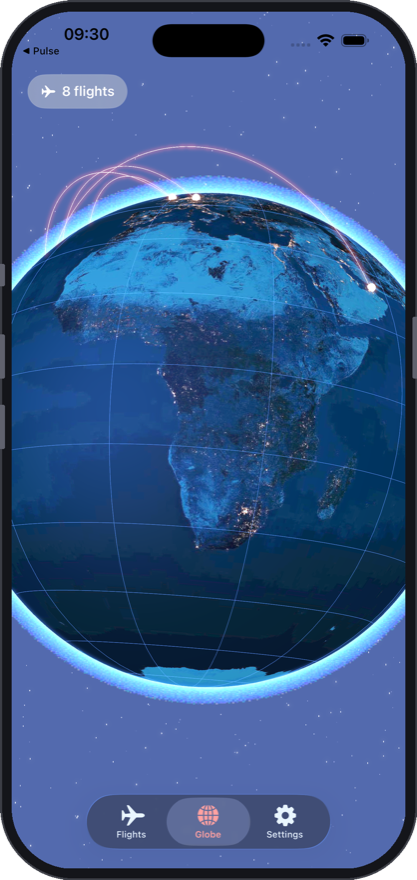
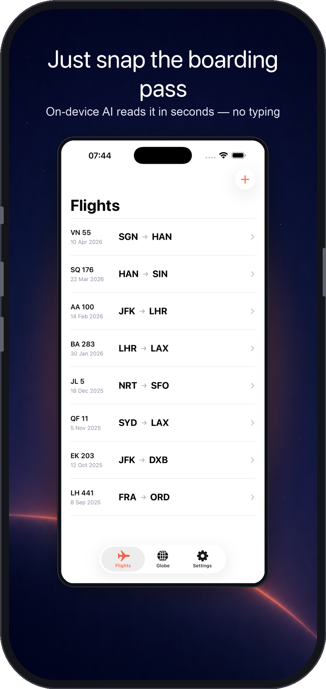
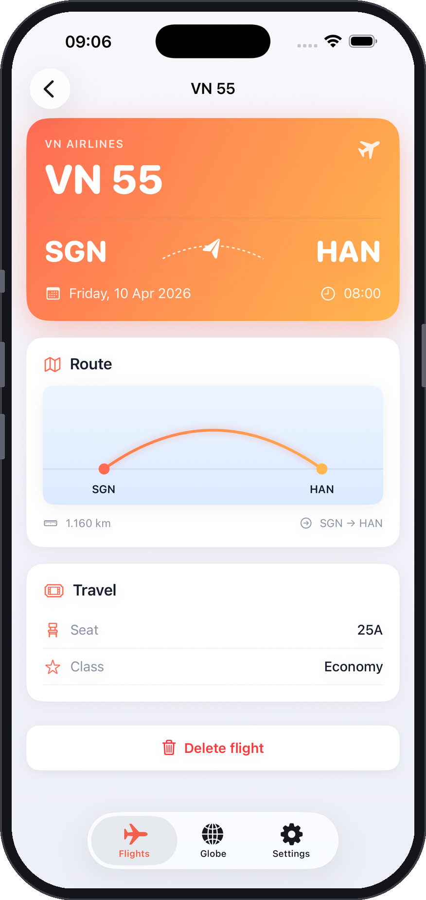
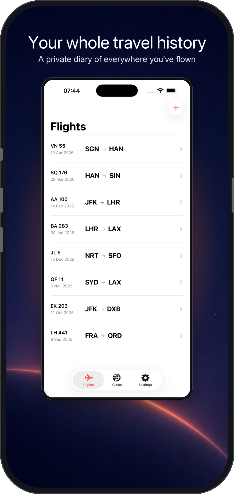

Your 3D globe
Every flight, a glowing arc on a night-lit Earth
Your travel history rendered as arcs across a living 3D globe you can spin — a map that belongs only to you.

Scan a boarding pass
A photo in, a logged flight out
On-device AI reads the pass and pins the route automatically — no typing, no account, nothing leaves your phone.

Flight detail
Route, dates and aircraft at a glance
Tap any flight for the full picture — origin, destination, times and more, beautifully laid out.

Your flight log
A private journal of everywhere you've been
Every trip in a clean, searchable list — your personal aviation history, on your iPhone.
